Fish Health
Monitor
Wireless fish ECG through tank water. A custom 4-layer mixed-signal PCB that picks up a fish's heartbeat through the water itself. The firmware is built to stream heart rate, HRV and artifact counts over Bluetooth 5; I have tested it on a PC and measured the analog board on the bench, but have not run it on the board yet. The electrodes never touch the animal.
Results
bench-measured on the assembled board · beat detection is simulated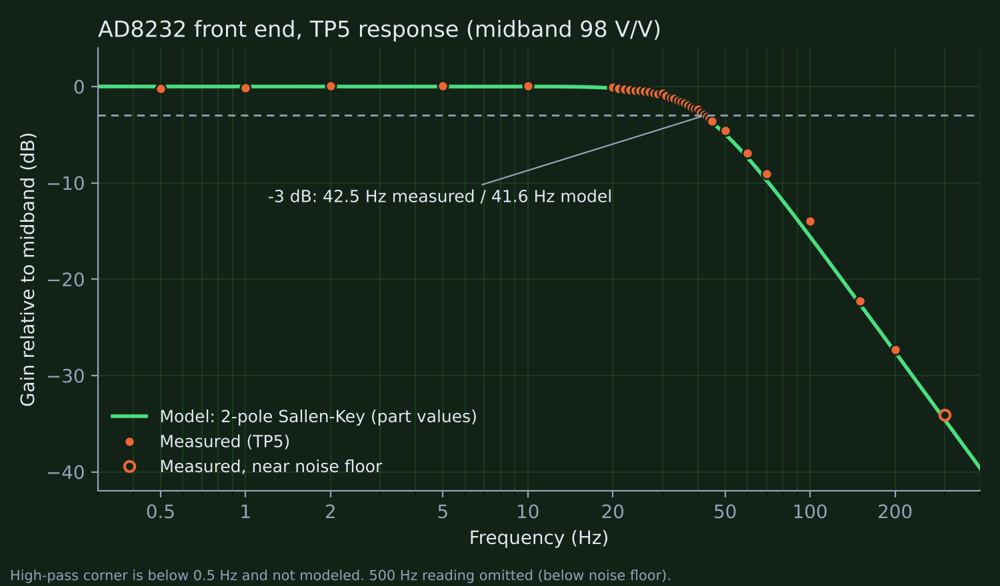
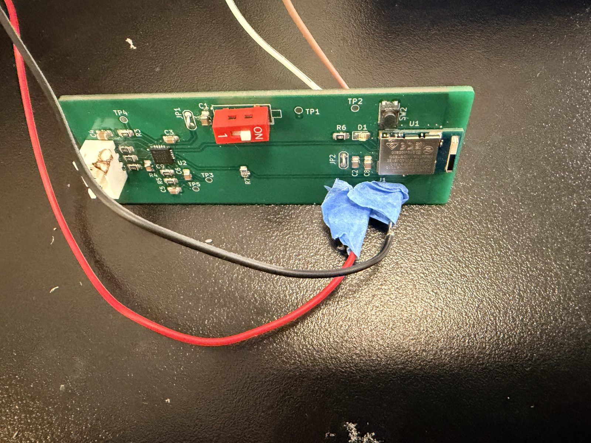
Overview
I designed a coin-cell-powered wireless bio-sensing platform for non-invasive aquatic biometric monitoring. With electrodes submerged in the tank water, the system is designed to measure the fish's cardiac signal through water conductivity alone, with no implants or restraints.
Originally conceived as a plant action-potential recorder, the architecture was pivoted via hardware-software co-design so the same board can serve as an aquatic monitor, with the species-specific changes made in firmware. The analog front-end stays wide; all species-specific signal extraction is handled in firmware.
What I Built
- Custom 4-layer mixed-signal PCB — KiCad schematic, full layout with separated analog/digital domains, RF keepout zone, and Gerbers prepared for JLCPCB SMT assembly; I hand-assembled and bench-tested the prototype
- Wideband analog front-end — AD8232 biopotential amplifier with a sub-0.5 Hz HPF (DC block) and a Sallen-Key LPF measured at −3 dB = 42.5 Hz, avoiding rigid brick-wall filters to allow software-defined signal extraction
- Active noise cancellation — Right Leg Drive electrode submerged in tank water is designed to inject an inverted common-mode signal, intended to cancel 60 Hz EMI at the source
- Zephyr firmware on the Cortex-M4F — 60 Hz notch, per-species QRS band-pass and a Pan-Tompkins-style beat detector; band, thresholds and species list are editable over BLE and saved to flash
- Host tools and tests — Python GUI for species setup, calibration and baselines, plus a test suite that runs the real C detector and config parser against simulated recordings
- RF layout — strict copper keepout beneath the MDBT50Q-1MV2's ceramic antenna across all four layers to maximize Bluetooth range
Spec vs. measured value
Analog numbers are bench-measured on the assembled board with a Keysight EDUX1052G scope, EDU34450A DMM and EDU36311A supply. Firmware numbers come from the host test suite on simulated ECG.
| Parameter | Target | Result | Basis |
|---|---|---|---|
| Gain | 100 V/V | 97.8 V/V | measured, 5–20 Hz midband |
| Low-pass −3 dB | Alias-safe at 256 Hz sampling | 42.5 Hz (model 41.6 Hz) | measured, 38-point sweep |
| High-pass corner | below the heart-rate band | flat to 0.5 Hz (−0.24 dB) | measured; corner itself is below the sweep |
| 60 Hz attenuation (analog) | > 6 dB | −6.9 dB | measured at TP5 |
| Input-referred noise | below ~10 µV rms | 3.2 µV rms (20–35 µVpp) | measured, inputs shorted |
| CMRR at 60 Hz | ≥ 80 dB (datasheet min) | 88 dB | measured, 1 Vpp common mode |
| Output offset | output at REFOUT | < 10 mV (TP4 = TP5 = REFOUT = 1.51 V) | measured, inputs tied to REFOUT |
| Supply current | weeks on a CR2032 | 159 µA at 3.0 V → 58 days continuous | measured, AFE on, MCU idle |
| Sample rate / resolution | 60 Hz below Nyquist, 12-bit | 256 Hz, 12-bit SAADC | firmware config |
| Beat detection | ≥ 90 % of beats, no false beats | 193/199, 0 false | host test, simulated ECG |
| Beat timing error | < 4 ms (1 sample) | 0.5 ms SD | host test, simulated ECG |
Problem
- Fish ECG is a few hundred µV, and tank water adds 60 Hz mains hum plus slow electrode drift that can saturate an amplifier.
- I wanted a sensor that never touches the animal: electrodes sit in the water, so no implants or restraint.
Lessons
- A Sallen-Key with equal capacitors has Q = 0.5 and a −3 dB point near 26 Hz. The board uses 56 nF and 27 nF (Q ≈ 0.72), so the −3 dB point sits at 41.6 Hz in theory and 42.5 Hz measured. Quote the −3 dB point, not just f0.
- Check the programming header pitch before ordering cables. My J1 footprint did not fit my ST-Link leads, so I soldered jumper wires straight to the pins.
- Power a reworked board through a current limit first. A 2.6 Ω short only showed up as a supply OCP trip and a 0.08 V rail.
- Keep the analog front-end wide and move species-specific filtering into firmware so one board serves several species.
- A 1 kHz Zephyr tick on the nRF's 32.768 kHz RTC is really 32 cycles (0.977 ms), so my "250 Hz" sampler ran at 256 Hz and the notch only removed 1.8 dB of 60 Hz. I now sample at 256 Hz on a 32768 Hz tick, which divides exactly.
- I removed ventilation rate from the output. It was calculated from heart rate, not measured, so reporting it would have been misleading.
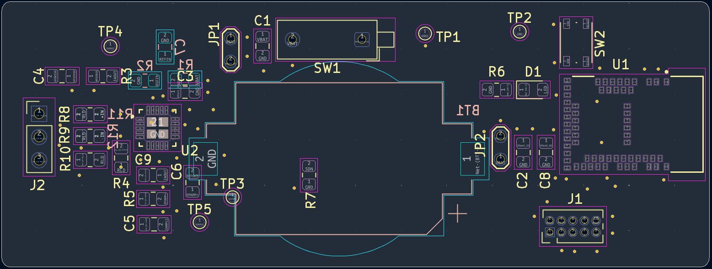
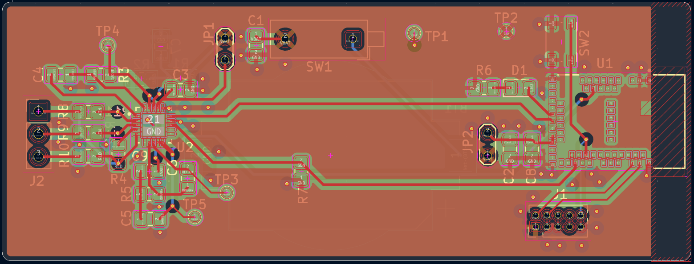
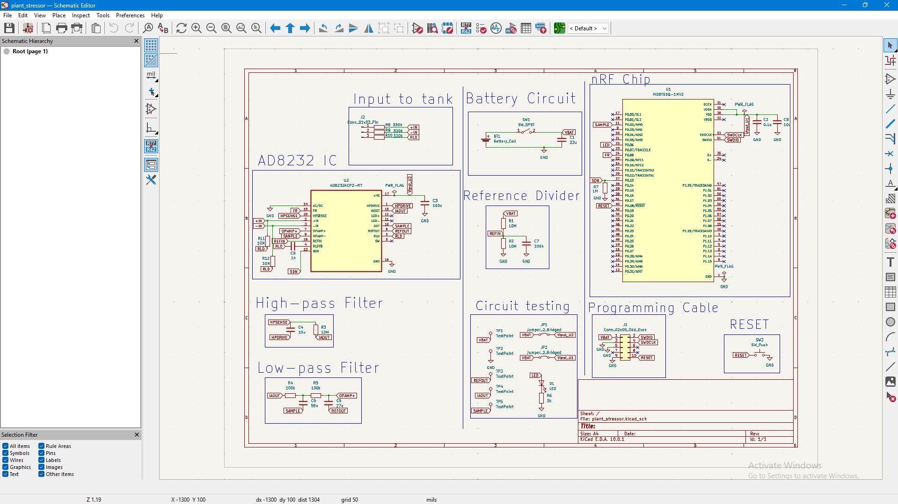
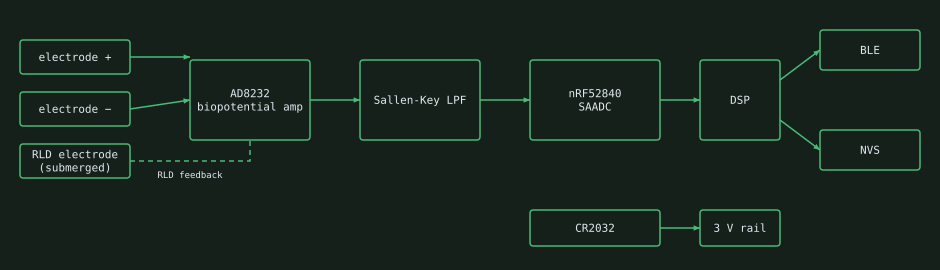
Lab aquatic environments are electrically hostile. 60 Hz mains hum couples strongly into tank water, electrode–water interfaces generate slow DC polarization offsets that saturate amplifiers, and different fish species produce biometric signals across a wide, variable frequency range.
A conventional approach — rigid analog brick-wall filters tuned to a single species — fails on all three counts: it can't adapt to different species without a hardware re-spin, it doesn't handle variable lab noise floors, and tight filter poles near the signal band risk introducing phase distortion into the very signals you're trying to measure.
Design decision: Use a deliberately wide analog passband to capture all biological signals while enforcing two hard limits against ADC saturation. Delegate all species-specific and noise-specific filtering to software DSP running on the nRF52840's hardware FPU.
The analog band runs from a sub-0.5 Hz high-pass to a low-pass with its −3 dB point at 42.5 Hz (measured; 41.6 Hz from the part values) — wide enough to cover every known aquatic vertebrate biometric in the biological action-potential range, tight enough to block the two dominant noise sources before the ADC ever sees them.
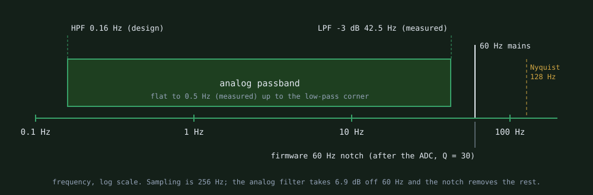
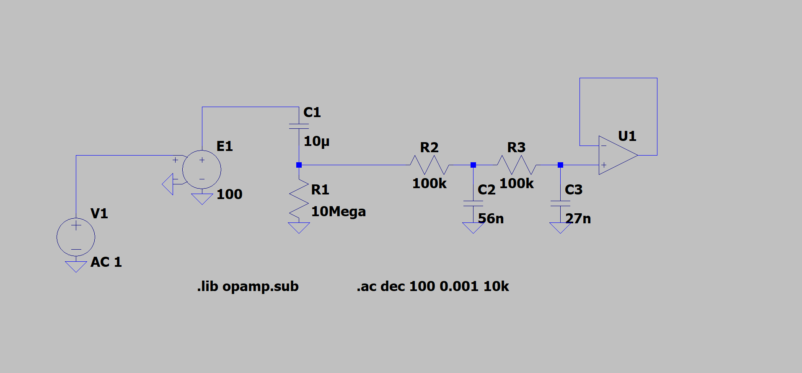
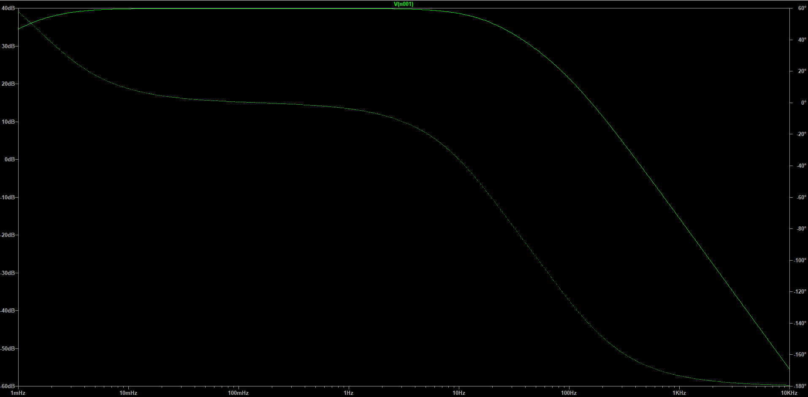
Active Shielding — Right Leg Drive
The third electrode is not a passive ground reference. The AD8232's Right Leg Drive (RLD) output actively injects a signal that is the inverted, amplified sum of the common-mode noise seen at both differential inputs. Submerging this electrode in the tank water is expected to create a feedback loop that reduces 60 Hz EMI at the source — a fundamentally superior strategy to filtering it downstream, especially in an unshielded open-water environment.
The wideband strategy intentionally passes some residual noise to the ADC. The firmware running on the nRF52840's ARM Cortex-M4F is responsible for all signal extraction.
ARM Cortex-M4F FPU Filtering
The nRF52840's hardware FPU runs CMSIS-DSP IIR biquad cascades on every sample. Two filters run before the beat detector:
- 60 Hz notch — Q = 30 (about 2 Hz wide), much sharper than is practical in analog hardware; regenerated for 50 Hz mains with one script flag
- Per-species QRS band-pass — 2nd-order Butterworth, 5–25 Hz by default; each species slot stores its own coefficients, which the GUI designs and the firmware checks for stability before using
Hardware-software co-design pivot: This firmware DSP architecture is designed to allow the platform — originally designed for plant electrophysiology — to be repurposed for aquatic bio-telemetry without any hardware modification.
The firmware is written for Zephyr (nRF Connect SDK) on the nRF52840. It has not run on the custom board yet; the detector and configuration code have been tested on my PC against simulated recordings (see Testing below).
- Sampling — SAADC at 256 Hz, 12-bit, 4× oversampled; every sample carries a tick count, so dropped samples are detected and gap-filled
- Filtering — 60 Hz notch, then the species QRS band-pass; delay lines are primed to the DC level so the 1.5 V AD8232 offset doesn't ring through on start
- Detection — 20 ms RMS envelope, adaptive signal/noise thresholds, refractory period and an R-R outlier gate; oversized transients are counted as artifacts (cough or movement) and never as beats
- Telemetry — a 26-byte packet per detected beat (BPM, HRV RMSSD, artifacts/min, beat amplitude, status), plus a 1 Hz NO_SIGNAL packet when no beat is seen for 5 s
- Health calls only after a baseline — no literature heart-rate limits are compiled in; a species reports UNCALIBRATED until I record that fish at rest and apply measured limits
- Persistence — species list, bands, limits and detector thresholds are saved to NVS flash, validated again at boot, and ignored if they were made for a different sample rate
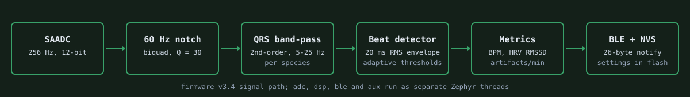
The firmware (v3.4.0) is split into four preemptive Zephyr threads connected by message queues, so sampling timing never depends on DSP or BLE work.
| Thread | Stack | Priority | Job |
|---|---|---|---|
| adc_thread | 1024 B | 2 | Wakes on a semaphore from a 256 Hz k_timer, reads the SAADC, posts the sample and its tick count |
| dsp_thread | 3072 B | 3 | Notch + band-pass, QRS detection, BPM / HRV / artifact rate, status, posts to telem_queue |
| ble_thread | 2048 B | 5 | Sends the 26-byte telemetry packet as a GATT notification |
| aux_thread | 1536 B | 6 | Sends configuration replies and the raw-ADC calibration stream |
- Timing — the sample clock is a
k_timerof exactly 128 RTC ticks whose expiry gives a semaphore, so the ISR stays short; all beat timing comes from the sample index, not wall-clock time - Queues —
k_msgqbetween stages: 32 raw samples (125 ms of slack), 4 telemetry packets, 16 aux packets; puts useK_NO_WAITso a slow stage drops data instead of blocking the sampler - Shared filter state — a
k_mutexguards the active species profile and bandpass coefficients, so a species change over BLE can re-initialize the filter safely while the DSP thread runs - DSP — CMSIS-DSP float biquad cascades on the Cortex-M4F: one notch stage and a two-stage band-pass
- Species slots — eight slots, four pre-named (glass catfish, Atlantic silverside, inland silverside, Chromis viridis); slots can be added, renamed or deleted over BLE, and each has its own band and measured limits
- GATT service — species select, telemetry notify, acquisition start/stop, a command/response configuration characteristic, and a raw-ADC stream for calibration
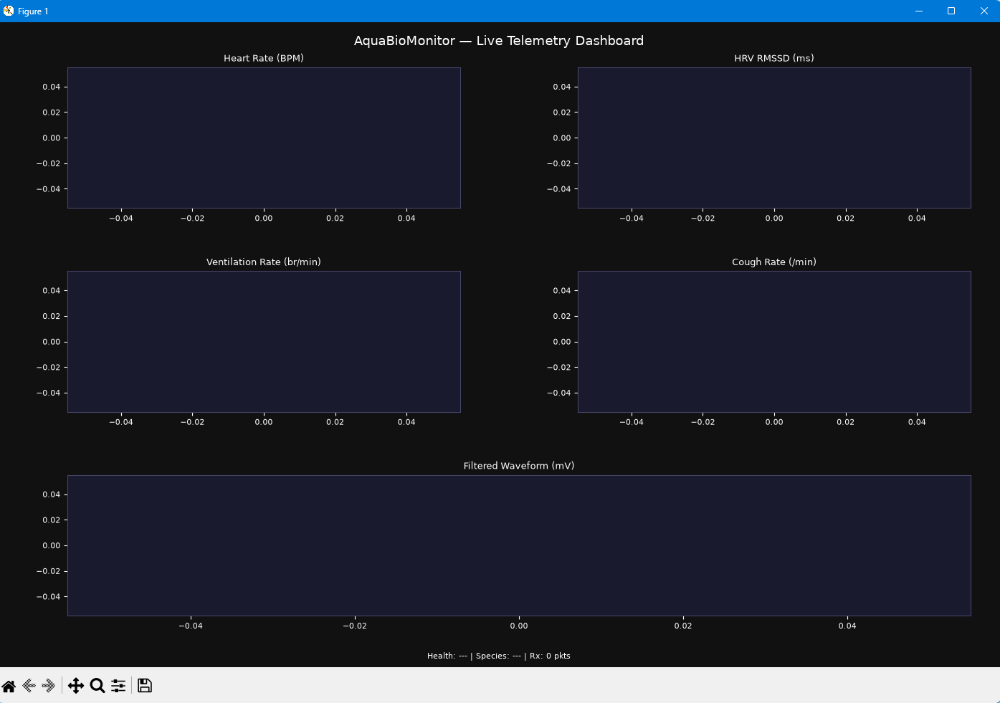
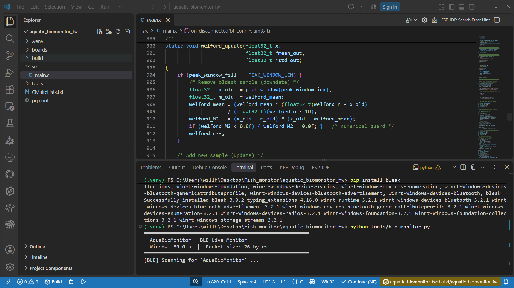
tools/ble_monitor.py (bleak) scanning for the "AquaBioMonitor" peripheral, 26-byte packets, 60 s window. No board connected in this capture.Before the board is up, I test the firmware's detector (qrs_detect.c) and configuration parser (cfg_proto.c) on my PC. Both files have no Zephyr dependencies, so the test suite compiles the same C code into a shared library and drives it from Python with simulated ECG passed through a model of my analog front end (0.16 Hz high-pass, two 40.8 Hz poles, 12-bit ADC, mains hum, baseline wander and noise).
| Simulated case (120 s) | Beats found | False | Timing SD |
|---|---|---|---|
| Inverted polarity | 193/199 | 0 | 0.46 ms |
| 15 mV hum + 40 mV wander | 193/199 | 0 | 0.47 ms |
| Signal drops to 0.35× at 60 s | 193/199 | 0 | 5.4 ms |
| Heart rate 60 → 120 BPM | 136/139 | 0 | 2.9 ms |
| Electrode off for 30 s | 144/150 | 0 | 0.53 ms |
| Three cough bursts | 187/199 | 1 | 0.46 ms |
| Small signal (60 µV at input) | 193/199 | 0 | 16 ms |
- What the misses are — about 6 beats per run fall in the 4 s window where the detector learns its thresholds; the cough case also skips beats inside each 1 s artifact hold-off. All three coughs were flagged as artifacts.
- Weak spot — at the smallest signal, timing jitter rises to 16 ms and HRV reads about twice the true value. Heart rate holds up; HRV needs a stronger signal, which I will check on real recordings.
- Configuration GUI — a tkinter + bleak app with four tabs: detector thresholds, species (add, rename, band design), baseline (record a resting fish and turn the measured heart-rate range into limits), and calibration
- Calibration from data — three raw captures (empty tank, resting fish, deliberate artifacts) set the beat threshold between the noise floor and the weakest beat, and report whether the front end is noise-limited or would benefit from more gain
- Automated checks — 53 pass/fail checks across protocol, capture, calibration and baseline code, including invalid names, unstable filter coefficients and bad species IDs being rejected by the real firmware parser
Limit of these numbers: the ECG is synthetic. It shows the algorithm works on a known waveform, not that it fits real fish QRS shapes. Real recordings come next.
4-Layer Stackup & RF Keepout
The 4-layer stackup is designed with dedicated power and ground planes to support domain separation between the noise-sensitive analog measurement path and the switching digital/RF domain. A strict copper keepout zone is enforced on all four layers directly beneath the MDBT50Q-1MV2's integrated 2.4 GHz ceramic antenna. Removing ground copper from the antenna footprint is intended to keep the ground plane from loading the antenna, to maximize expected Bluetooth range in the lab.
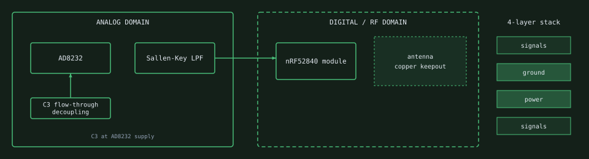
Signal Integrity — Flow-Through Decoupling
High-frequency switching transients from the nRF52840's internal DC-DC converter are intended to be blocked from coupling into the analog measurement path via flow-through power decoupling on the AD8232 supply pin (C3, 100 nF placed as close to the IC pin as the layout permits). The goal is to keep digital switching noise from appearing as correlated interference in the biopotential measurement.
DFM — Via-in-Pad Mitigation & Automated Assembly
Several SMD passive footprints in the design placed vias within the pad copper. Without mitigation, solder wicks through the via during reflow, causing insufficient joints and potential opens. Each instance was identified in layout review and resolved by offsetting or tenting the via before Gerber generation.
The BOM, CPL, and POS files were optimized for JLCPCB's automated SMT pick-and-place service, with all standard passives and commodity ICs assigned to the JLCPCB parts library. The AD8232 and MDBT50Q-1MV2 — both with non-standard footprints — are flagged for manual lab soldering after automated reflow, minimizing per-unit cost while maintaining assembly quality on the critical components.
| Layer | Function | Thickness |
|---|---|---|
| L1 | Signals | TODO |
| L2 | Ground | TODO |
| L3 | Power | TODO |
| L4 | Signals | TODO |
I hand-assembled the board with paste and hot air, then measured the analog chain at its test points: TP3 (REFOUT), TP4 (instrumentation-amp output) and TP5 (after the low-pass). A tiny bare-metal program flashed over SWD holds the AD8232's SDN pin high so the board runs on the coin cell with the debugger unplugged.
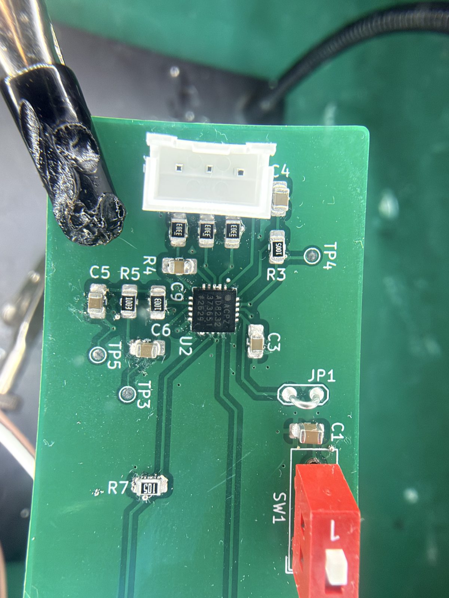
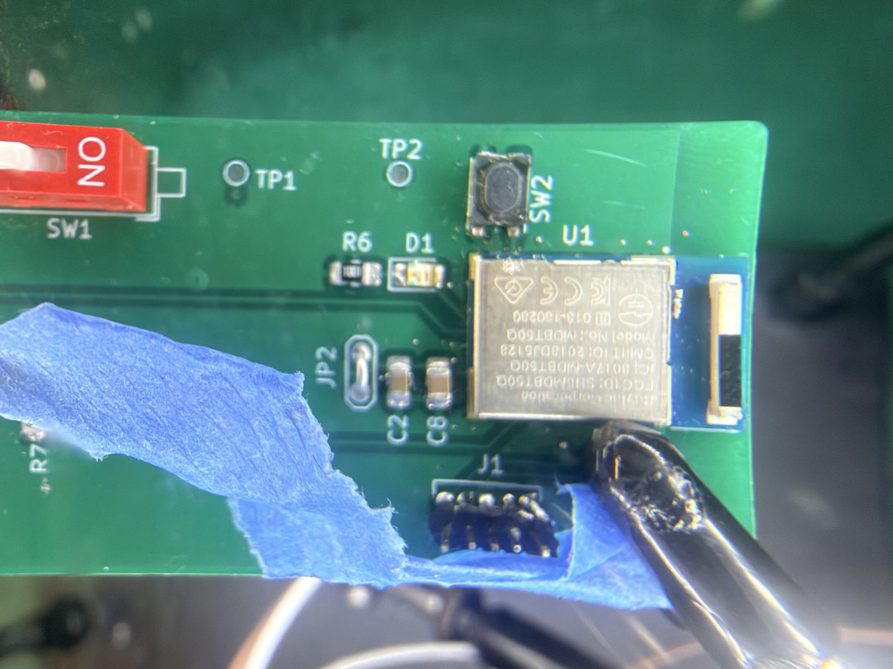
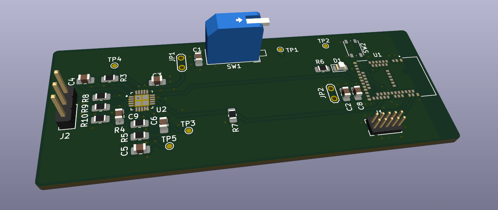
| Test | Method | Result |
|---|---|---|
| Rails and reference | DMM, inputs tied to REFOUT | VBAT 3.04 V, REFOUT 1.51 V, TP4 = TP5 = 1.51 V |
| Gain and response | Generator through 1000:1 divider, 0.5–300 Hz | 97.8 V/V, −3 dB at 42.5 Hz |
| Noise | Inputs shorted, scope AC RMS, floor subtracted | 306 µV rms at TP5 → 3.2 µV rms input-referred |
| CMRR | 1 Vpp 60 Hz on both inputs, 64× averaging | 3.77 mVpp at TP4 → 88 dB |
| Supply current | 100 Ω in series with the cell, DMM across it | 15.9 mV → 159 µA at 3.0 V |
- Battery life — 159 µA with the AFE on gives 58 days of continuous recording on a 220 mAh CR2032. That is the floor while recording: sampling, DSP and BLE notifications add to it, so the next measurement is the average current with the full firmware running. Going past 58 days means duty-cycling the AD8232 through its SDN pin between recording windows.
- Not yet measured — Right Leg Drive benefit in a saline phantom, shutdown current, full-firmware average current, BLE range, and heart rate against a reference on real fish.
- Limits — the noise window was 1 s, so content below about 1 Hz is under-counted; the high-pass corner sits below the 0.5 Hz sweep floor.
Wrong-pitch programming header
The J1 SWD header on my board did not match the leads I had for my ST-Link, so nothing would seat. I soldered jumper wires directly to VDD, GND, SWDIO and SWCLK and taped them down. The first loose connections dropped the SWD link mid-session; soldered wires fixed it, and OpenOCD then identified the nRF52840 and flashed it reliably.
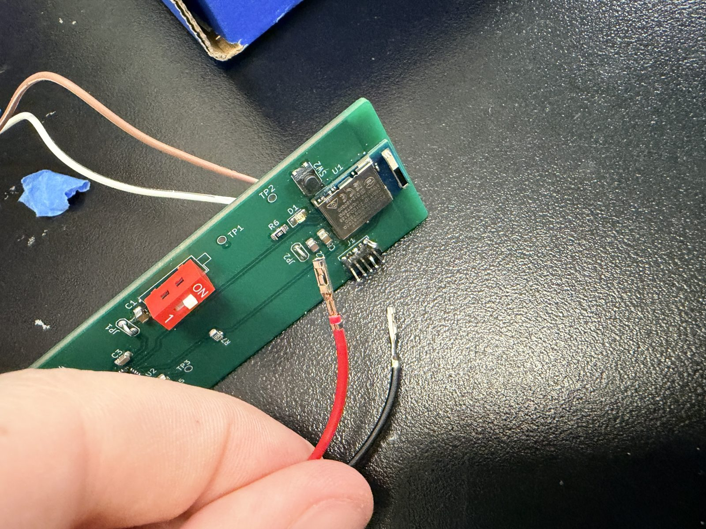
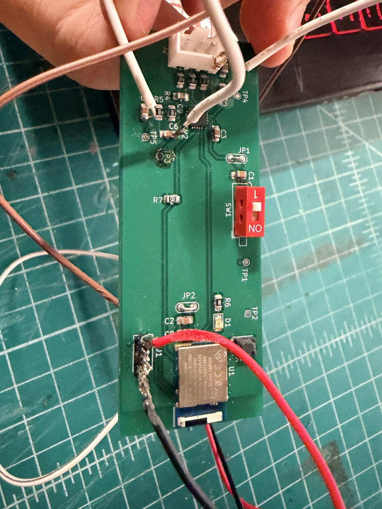
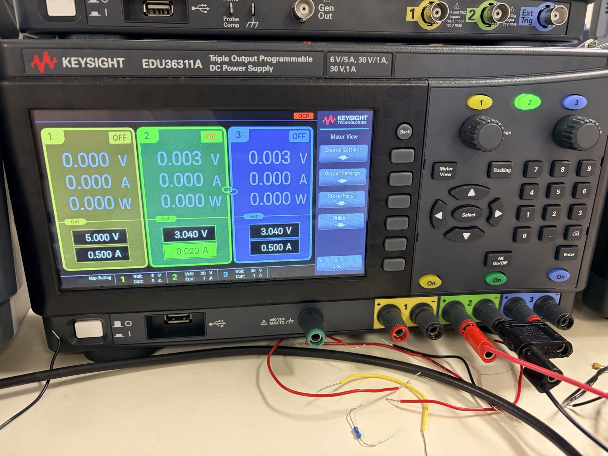
Burned chip and a 2.6 Ω short
Midway through testing, the bench supply hit its current limit as soon as I connected it, and a 100 Ω series resistor showed why: 29 mA flowed and the board rail sat at 0.08 V. With power removed, VDD to GND read 2.6 Ω (lead resistance about 0.3 Ω), drifting to 3.4 Ω as it warmed. That is too high for a solder bridge, so I treated it as a damaged part. J1 measured clean, the short was there with SW1 on or off, and no capacitor got warm under a low-voltage current test. I replaced the chip, the short cleared, and I re-flashed and re-ran gain spot checks before trusting the rest of the data.